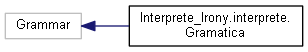

Interprete Basico con C# y Irony
Como material de apoyo para el curso de Organizacion de Lenguajes y Compiladores 2 - Desarrollado por Javier Estuardo Navarro
Jerarquía de la clase
Ir a la jerarquía textual de la clase

Generado por
1.8.14
 1.8.14
1.8.14